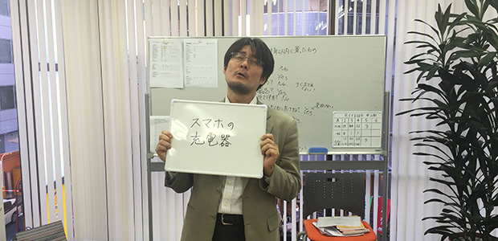

小学生から中学生にかけて、仲の良い友人とやっていた遊びがあります。
それは「二十の扉」
このブログを書くにあたって調べてみて初めて知ったのですが、かなり昔にラジオ番組でやっていたらしいのです。
遊びの手順は、
①出題者が何か言葉を思い浮かべる（物体の名前でも概念的な言葉でも構わない）。
②挑戦者は最大20の質問をすることができる。ただし、質問はYES／NOで答えられるものでなければならない。
③規定質問数以内で正解を言い当てられたら挑戦者の勝利。そうでなければ出題者の勝利。
という感じです。
これがなかなかハマるんですよ。
想像力をフルに使って熱くなれます。
というわけで、HP支配人と勝負してみました。
皆さんも一緒に考えてみて下さい。
１試合目～出題者、池村～
池 村：さて、今日は初めてだから少し難易度を下げて範囲を絞ろう。
支配人：というと？
池 村：「私が１年以内に買ったもの」をお題とする。
支配人：まあやってみましょう。
質問１／それは身につけるものですか？
回答１／NO
質問２／それは家で使用するものですか？
回答２／YES
質問３／それは料理に使うものですか？
回答３／NO
支配人／しまった…無駄な質問をした。池村氏が料理なんかしないことはわかっているのに…！
池 村：フッ…ミスったな。
質問４／それは電化製品ですか？
回答４／YES
質問５／それは洗面所で使用するものですか？
回答５／基本的にNO
支配人：これで髭剃りやドライヤーはなくなった。ちょっと方向性を変えるか。
質問６／それは一辺30cmの立方体の中に収まりますか？
回答６／YES
支配人：即答か…。微妙なラインですらないということは、かなり小さいものか。
質問７／それは夜に使うものですか？
回答７／まぁ個人的にはYES
池 村：ちょっとイヤなとこついてくるな…。
質問８／それはコンセントが必要なものですか？
回答８／YES
池 村：おいおい、もしかして目星ついてるのか…！？
質問９／それは毎日使いますか？
回答９／限りなくYES
池 村：ヤバイ、絶対気づかれている…！
質問10：それはスマホの充電器ですか？
回答10：YES！ビンゴ！
池 村：早すぎるってば…（泣）。
支配人：ちょっと簡単すぎましたね！

２試合目～出題者、支配人～
池 村：どうやら君を甘く見ていたようだ。というわけで、こちらから範囲を絞らせてもらう。
支配人：どうぞどうぞ。
池 村：では、「君が一週間以内にインターネットで見たもの」といことでよろしく。
支配人：う～ん…。よし、決めました。
質問１／それは物体ですか？
回答１／YES
質問２／それは日本国内にありますか？
回答２／YES
質問３／それはナマで見るためには特定の場所に行かなければなりませんか？
回答３／ん～突き詰めればYESかな。その日見たものに限っては…。
池 村／ということは、具体的なものというより色んな派生というか複数のバージョンがあるものなのか…。
質問４／それは動画で見ましたか？
回答４／NO
質問５／それは屋内にあるものですか？
回答５／YES
質問６／それはこの研究所ARCSから150m以内にありますか？
回答６／YES
池 村：けっこうありふれているものか…。
質問７／それは売り物ですか？
回答７／YES
池 村：まったくわからん…こうなったら絞り込み作戦だ。
質問８／それはコンビニで買えますか？（来いYES！、来てくれ！）
回答８／NO
池 村：ぐぁ！キツイ！ということはデパートレベルでないと置いていないものか？ たしかに150m圏内に髙島屋とかあるし…・
支配人：いや～迷走してますな！（笑）
池 村：くっ…！流れを変えねば…。
質問９／それは明らかな意図をもってネット検索しましたか？
回答９／YES
池 村：それを近々購入しようとしている…？ 一体何なんだ！ あ…もしかして大いなる勘違いをしていたのかも。
質問10／それは飲食関係ですか？
回答10／NO
池 村：違ったか…（汗）。
質問11／それは仕事に必要ですか？
回答11／NO
質問12／それは一つあれば十分なもの？
回答12／YES
池 村：消耗品ではないと…。もうワケわからん。
質問13／それは私も持っているものですか？
回答13／ん～…おそらくYES
支配人：これは微妙ですけどね。フィフティフィフティです。仮に持っていたとしても私が見たものとは違うバージョンのはずです。
池 村：なんとなく方向性はわかってきたぞ。
質問14／それは家具ですか？
回答14／YES
池 村：くぅ～！ ここにいきつくまでにこんなにかかってしまった！ でも読めたぜ！
質問15／それはベッドですか？
回答15／YES！ あ～た～り～！
池 村：完全に序盤は方向性見失ってたわ。でも「家具」で「おそらく私もフィフティフィフティで持っている」ということでわかった。これは「ベッドor布団」ということだと思ったから。もし枕とか机とかそういったものならほぼ100％持っていると確信できるもんな。
支配人：いや～池村先生、弱いです（笑）。
池 村：今日のところはこれで勘弁してやらあ！
というわけで、皆さんもやってみてはいかが？